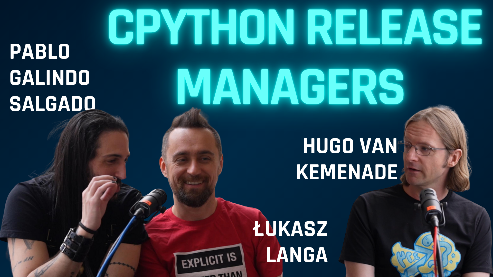

Behind the Python Release: Motivation, Fails & Rituals with Łukasz, Pablo & Hugo
In this episode, I talk with Hugo van Kemenade, Pablo Galindo Salgado, and Łukasz Langa about CPython release management—from the evolution of the release process to becoming a Release Manager and sustainable open source funding.
About the Guests
Hugo van Kemenade
Release Manager for Python 3.14 & 3.15, currently employed at the Sovereign Tech Agency as a fellow. Maintainer of open-source projects such as Pillow. Co-organizer of local Python events in Helsinki.
Pablo Galindo Salgado
Core Python developer, currently employed in the Software Infrastructure department at Bloomberg. Release Manager for Python 3.10 & 3.11, and a member of the Steering Council. Co-host of the core.py podcast.
Łukasz Langa
Python's Developer in Residence at the PSF and Release Manager for Python 3.8 & 3.9. Creator of Black, the opinionated Python code formatter, and co-host of the core.py podcast.
Episode Outline
- Most & Least Successful Releases
- Evolution of Release Process
- Release Schedule and Annual Releases
- Handling PRs and Reverts
- Becoming a Python Release Manager
- Motivation and Time Zone Challenges
- Release Rituals and YouTube Party
- Sustainable Open Source Funding Models
- Getting Involved & Further Listening